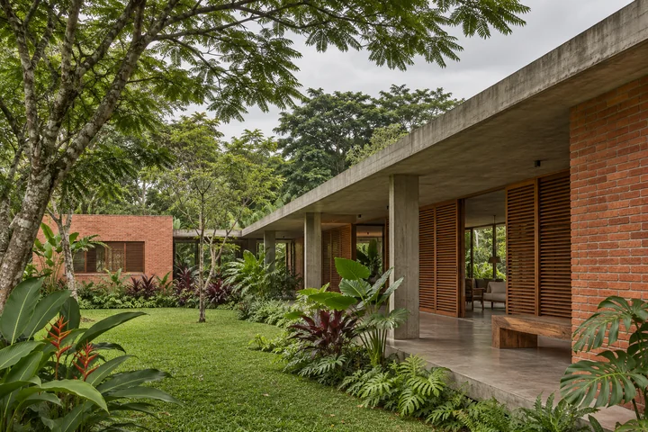
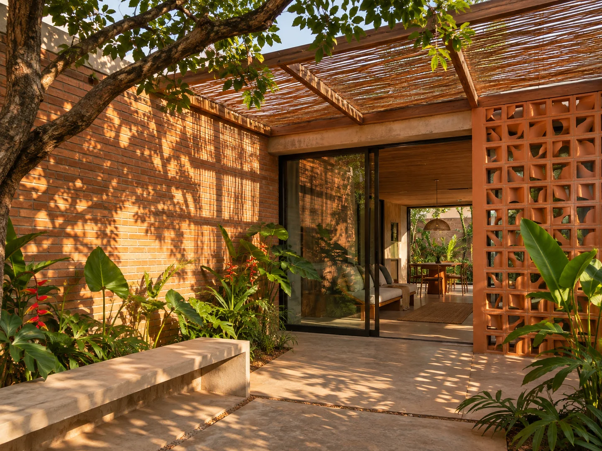

Projeto residencial
O terreno é o primeiro desenho.
Para uma casa nova, o primeiro briefing reúne o que você sabe sobre o lote, o tamanho imaginado e a etapa atual do projeto.

Montar um briefing
Escolha o tipo de projeto, a área aproximada e o que você já tem em mãos.
Seu briefing de exemplo
- Protocolo de teste
- Projeto
- Área aproximada
- Etapa
Em um atendimento real, o estúdio confirmaria o escopo e combinaria uma conversa antes de preparar a proposta.
Estudo de implantação
Uma casa em torno de um pátio.
Neste estudo, a varanda conecta a sala ao jardim e distribui o acesso aos dormitórios. A casa se organiza em volumes baixos ao redor da área aberta.

O que reunir antes de projetar.
- Informações do terreno
Onde fica, o tamanho aproximado e se já existe levantamento.
- Programa da casa
Quem vai morar, quais espaços são indispensáveis e o que pode ser decidido mais adiante.
- Etapa do projeto
Se é um estudo inicial, se você já escolheu o terreno ou se já tem documentos e medidas.
Antes da primeira conversa
Ainda estou escolhendo o terreno. Posso começar?
Sim. Escolha a etapa correspondente no briefing. A primeira conversa pode esclarecer quais informações reunir sobre o lote.
Área do terreno e área da casa são a mesma coisa?
Neste formulário, informe a área que imagina construir. Se ainda não tiver uma estimativa, escolha “Ainda vou medir”.
O envio já inicia um projeto?
Não. O briefing é a abertura da conversa. A contratação e o escopo são combinados à parte.